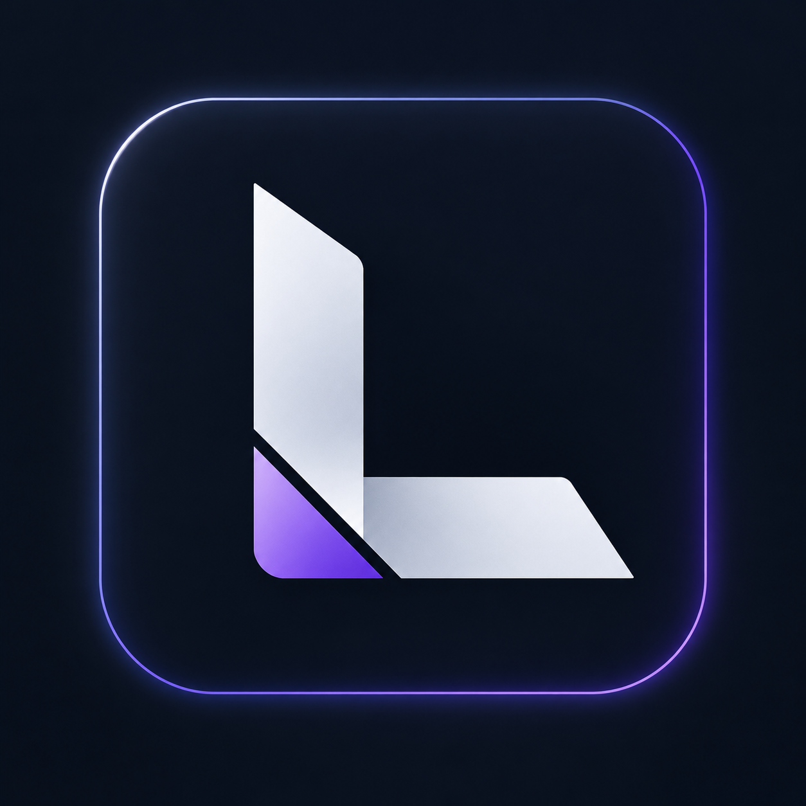
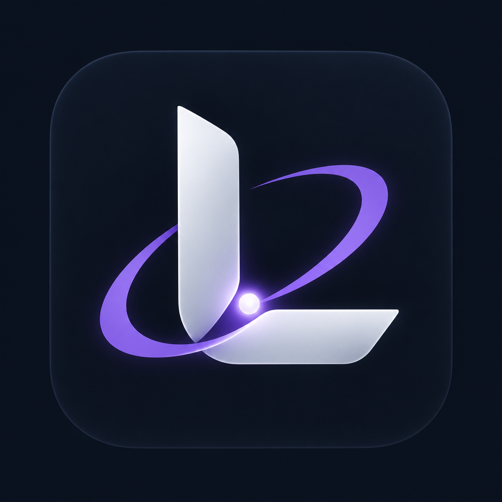
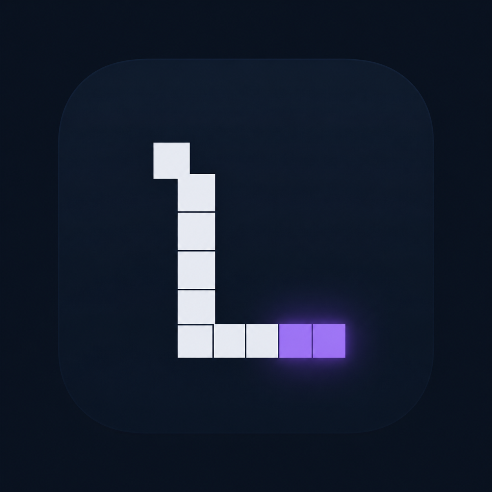

A · Geometric L — Selected
Silver-white geometry with a violet accent.
Three app-icon directions in graphite, silver and violet. Option A is selected as the LumenDSH brand mark. Installed in Android version 0.7.47-branding.

Silver-white geometry with a violet accent.

An orbital arc around a luminous core.

A minimal retrocomputing monogram.